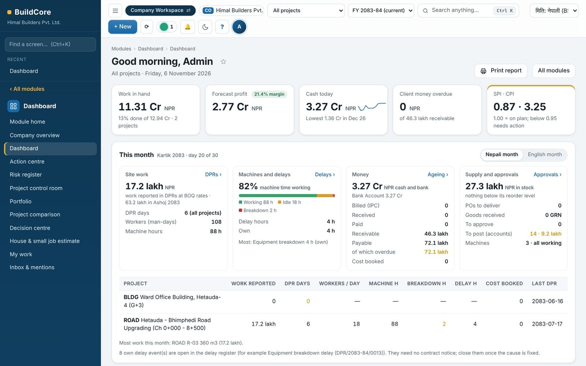
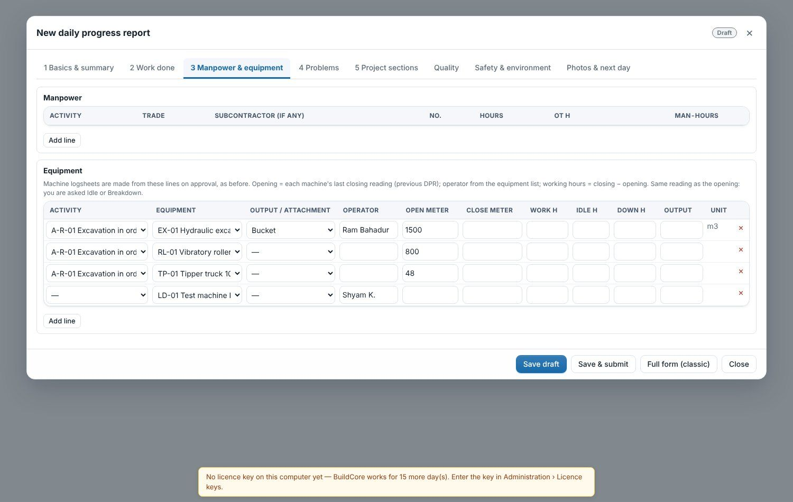
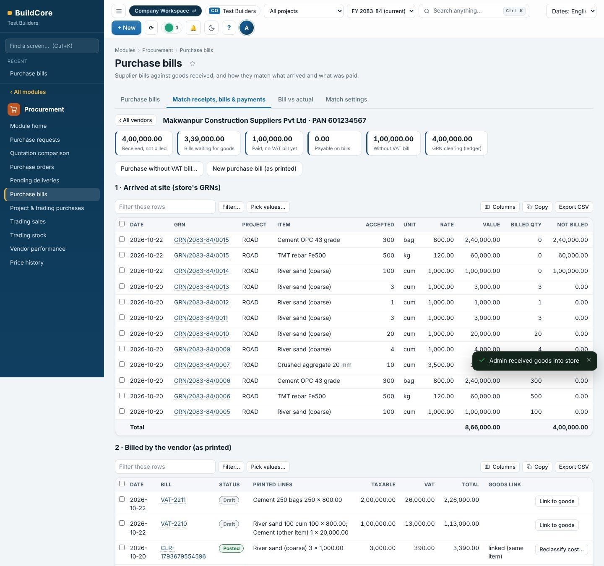
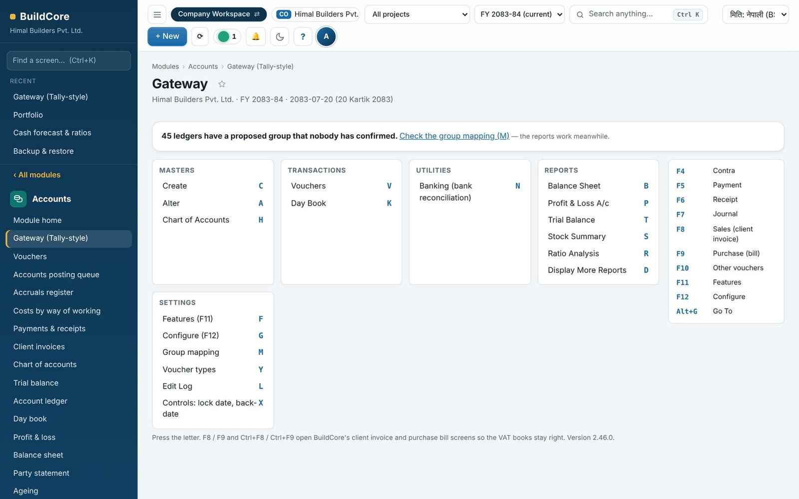
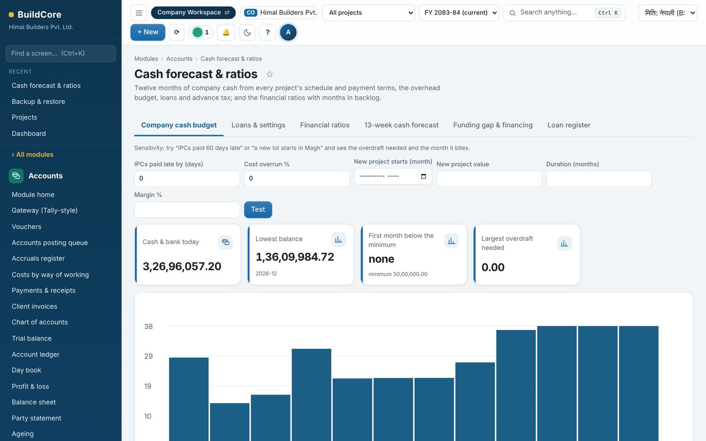
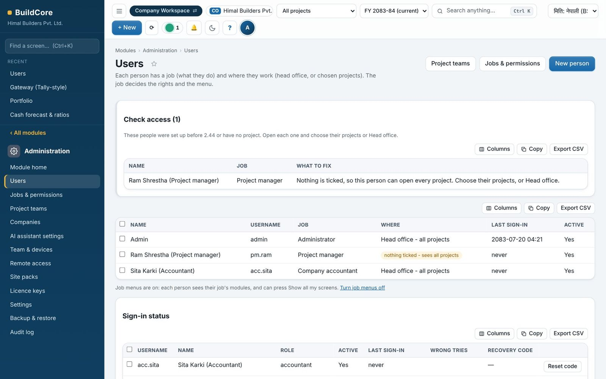

Construction, under control
from the sitethe storeevery billevery machinethe cash to the books.
BuildCore is the construction ERP for contractors in Nepal. Road, building, hydropower, bridge and water work, from the daily progress report to the balance sheet, in one database on your own computers.

Every cubic metre placed at site and every rupee spent should reach the books the same day, so a contractor knows profit and cash while there is still time to act, not at year end.
The problems it solves, and how
Most contractors run each site in Excel, keep store registers on paper and do the books in a separate package. The figures never meet. BuildCore puts all of it in one database, so every figure comes from the work itself.
Each step starts from what the step before produced
Nothing is typed twice. An approved DPR becomes progress, labour and machine cost and the logsheet; a goods receipt becomes stock and the supplier's liability; a certified IPC becomes the client invoice with VAT, TDS and retention.
From the site to the board room
Universal DPR with machines that fill themselves
One report per project, date and shift, with the project's own template. Site reports, the QS accepts.
- Scope, cumulative and balance per BOQ line
- Opening meter from the last closing, operator from the register
- Idle or breakdown asked when hours are short
- Approval updates progress, cost, logsheets, events and quality in one go

Three-way match of receipts, VAT bills and paymentsNEW
Store enters what arrived; accounts types the VAT bill exactly as printed; every gap is listed per vendor.
- Link each bill line to the goods, even “other item” lines
- Stock carries the real rate; VAT register shows the bill as printed
- Goods not billed, bills without goods, cash paid without bill
- Bill vs actual for the auditor

Tally-style accounting on the same booksNEW
Accountants keep the keys they know; managers keep the controls they need.
- Gateway with V, K, T, P, B keys; F4–F7 vouchers; Ctrl+A to accept
- Bill-wise New Ref / Agst Ref, TDS by section
- Cost centre by project, BOQ item and machine
- Audit lock date and an Edit Log of every change

Cash and profit you can trust
See next quarter's cash week by week, and profit only where it has really been estimated.
- 13-week cash forecast from bills, IPCs, payment requests, wages, tax and loans
- Funding gap with the actions that close it and the cost of financing
- Financial command centre and 16 alerts with owner and escalation
- Forecast profit only where a cost estimate exists, never a false 100%

Everything a contracting company runs on
📊Dashboard
Needs attention, This month, command centre, decision centre, alerts
🧰Tools & views
Report generator (42 sources), KPIs, site mode, AI copilot
🏗️Site work & DPR
Universal DPR, schedule, quality, drawings, RFIs, safety, document library
📑Commercial & billing
BOQ, measurements, IPC, variations, contracts, claims, CVR, close
📦Store & inventory
Requisition, GRN, issue, return, transfer, count, reconciliation
🛒Procurement
PR, quotation comparison, PO, bills, three-way match, trading
💰Accounts
Tally Gateway, payments, wages, petty cash, bank import, VAT, TDS, cash forecast
🚜Equipment & machines
Register, logsheets, maintenance, hire, cost per hour, machine P&L
⚙️Plant
Crusher and batching: mix designs, production runs at real cost
🏢Assets & Fixed assets
NFRS register, depreciation, leases, impairment, tax, PPE note
📐Resources & rates
1,740 DoR / DUDBC / electrical / sanitary norms, rate books, hire rates
🗂️Master data & Administration
Projects, materials, parties; users by job and project, backups, audit log
Each person sees only their own work
Each person gets a job (storekeeper, site engineer, QS, accountant…) and where they work: head office or chosen sites. A storekeeper sees store screens, an accountant sees accounts; nobody wades through 170 screens.
Tally keys, AD or BS dates, Paste from Excel on every list, and Ctrl+K to find anything.

Your data stays yours, and stays right
Works where you work
Learn it in one story: 21 lessons, 3.9 hours
One company, Himal Builders, and one road project, from installing BuildCore to a locked month end. Every module, with real demo data and nothing repeated.
Better every week
Thirty releases since October 2026. Each one installs over any version from 1.6, keeps every record, number and balance, and comes with its own tests.
Full release history →Informative dashboard
Needs attention grouped as Important, This week, Review and For info; contract notices only for employer and neutral delays; a This month panel with work done, billed, received, paid and cost.
BOQ by location
A short code on every BOQ line made of location and item (HW-M25); summary by item; BOQ import with locations; pickers show the codes.
Tally-style accounting
Accounts Gateway with 28 groups over the chart, voucher types and numbering, F4–F7 entry with bill-wise and cost centres, Tally trial balance, P&L, balance sheet and day book, audit lock date and Edit Log.
Three-way match
Site receipts, the vendor's VAT bill as printed and payments linked per vendor, including bills printed with another item and purchases without a VAT bill; Bill vs actual.
Bring one BOQ and one month of site records.
We load them and show you the DPR, the bill, the books and the margin in one sitting.